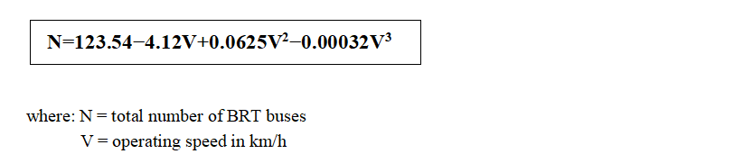

Conclusion and Recommendation

Conclusion
This study was conducted to critically evaluate the operation and service effectiveness of the Addis Ababa Light Rail Transit (LRT) system along the Tor-Hailoch to Ayat corridor and to assess the feasibility and suitability of introducing a Bus Rapid Transit (BRT) system as an alternative or complementary mode of mass transportation. The research was guided by one general and three specific objectives, which were systematically addressed throughout the study.
The analysis of the LRT system revealed considerable operational inefficiencies. Although the LRT was designed to operate at a maximum speed of 70 km/h and carry high passenger volumes, actual performance data demonstrated that the system operates at only 30.2% of its design capacity and 34.7% of its design speed, with an average operational speed of approximately 18–27 km/h. Furthermore, extended headways (average of 19 minutes), irregular electricity supply, and overcrowding during peak hours were found to significantly hinder service reliability and passenger satisfaction.
The assessment of BRT as a feasible alternative involved both qualitative and quantitative analysis. Global benchmarks, field surveys, and simulation using SUMO modeling illustrated that BRT systems consistently offer higher average speeds (50-60 km/h), greater service frequency, lower implementation costs (estimated at $3–8 million/km compared to $16–25 million/km for LRT), and greater flexibility in terms of infrastructure. These advantages make BRT more adaptable to Addis Ababa’s rapidly growing and spatially diverse transport demand.
A key quantitative finding was the development of a third-degree polynomial model to estimate the number of BRT buses required at different operating speeds. The best-fit equation derived from the simulation data is:
This model demonstrated an excellent fit (R2=0.998R^2 = 0.998R2=0.998) and allows transit planners to make data-driven fleet size decisions based on operational speed targets. For example, the model predicts that at a BRT speed of 24.3 km/h, approximately 56 buses would be required, which closely aligns with simulation outcomes.
A comparative analysis between LRT and BRT based on serviceability, cost, and feasibility confirmed the superior performance of BRT in nearly all measured aspects. Importantly, 98% of surveyed users expressed a preference for BRT, citing frequent service (37%), faster travel times (36%), and improved comfort (20%) as key reasons. These findings strongly support the conclusion that BRT offers a more feasible, scalable, and socially inclusive solution for Addis Ababa’s mass transit challenges.
In light of these findings, it can be concluded that while the existing LRT system provides foundational urban rail infrastructure, it falls short in meeting the growing transport demands of Addis Ababa. The introduction of a BRT system either as a replacement in under-performing corridors or as a complementary network presents a practical and economically viable strategy to enhance urban mobility, reduce congestion, and support sustainable city development.
Recommendations
Urban transportation in Addis Ababa faces significant challenges, including traffic congestion, low system efficiency, and limited capacity to serve the growing population. The current light rail transit (LRT) system, although initially promising, is underperforming due to operational inefficiencies, high maintenance costs, and low passenger satisfaction. To address these issues and improve urban mobility, this report recommends a strategic transition to a Bus Rapid Transit (BRT) system, which offers a faster, more flexible, and cost-effective solution. The following recommendations are based on recent research findings and aim to guide policymakers and urban planners in developing a reliable, sustainable, and passenger-focused transportation system for Addis Ababa. Based on our research findings, the following recommendations are proposed to improve current urban transportation in Addis Ababa by replacing the light rail transit (LRT) with a Bus Rapid Transit (BRT) system:
For the Government of Ethiopia
Develop a Clear Transportation Plan
Create a national plan that guides the development of BRT systems in the city. This plan should include specific goals, timelines, budget allocations, and standards for good service. Having a clear plan will help coordinate efforts and ensure that the new system works well for everyone.
Build Good Infrastructure for BRT
Construct dedicated lanes for buses on the main roads, especially on busy routes like Tor- Hailoch to Ayat. These lanes help buses avoid traffic congestion and run faster and more reliably. Also, set up modern bus stations with facilities that allow passengers to board quickly, check real-time bus schedules, and travel safely.
Create Strong Institutions to Manage the System
Establish or strengthen a dedicated organization responsible for managing the BRT system. This organization must ensure buses run frequently, remain on schedule, and maintain safety standards. Proper management will make the system more efficient and trustworthy.
Adopt Environmentally Friendly Buses
Encourage the use of electric or compressed natural gas (CNG) buses. These vehicles produce fewer pollution emissions and help protect the environment. Provide support, such as subsidies or incentives, to help bus operators buy cleaner vehicles.
Monitor and Improve Performance
Set up a system to collect data on how well the BRT operates, how satisfied passengers are, and the condition of buses and stations. Use this information to make improvements and fix problems quickly. This ongoing monitoring will keep the system effective and responsive to passengers’ needs.
Inform and Involve the Community
Run awareness campaigns to let people know about the advantages of BRT and encourage them to use it. Engage local communities and gather their feedback to improve service quality and meet their needs better.
For Urban Transport Authorities in Ethiopia
Design for Speed and Reliability
Plan the BRT routes so that buses can run at high speed (around 50 to 60 km/h). This can be achieved by giving buses their own lanes and making sure they are not delayed by other traffic. Reliable and fast services will attract more passengers.
Start Small and Expand Gradually
Begin by implementing the BRT on the busiest routes first. Learn from initial experiences, gather passenger feedback, and then extend the system to other parts of the city step by step. Taking a gradual approach will help ensure the quality and sustainability of the service.
Use Technology to Manage the System
Set up modern systems, such as GPS tracking, electronic ticketing, and real-time updates, to better control bus operations. These tools will help keep buses on time, inform passengers about arrivals, and improve overall management.
Build Capacity and Train Staff
Provide training for staff responsible for operating and maintaining the BRT. Local training centers can help develop skills in managing the new system, which is essential for smooth operations and customer service.
Promote Sustainable Practices
Focus on environmental sustainability by introducing electric buses and encouraging practices that protect the environment. This will help reduce pollution and improve air quality in Addis Ababa.
Final Summary
Switching from the current light rail system to a well-designed BRT system offers many benefits. BRT is more affordable, flexible, and can serve more passengers effectively. It can reduce traffic congestion, improve travel times, and be better for the environment. With proper planning, good infrastructure, and strong management, the new BRT system will help Addis Ababa develop a modern and reliable transportation network that meets the needs of its growing population.